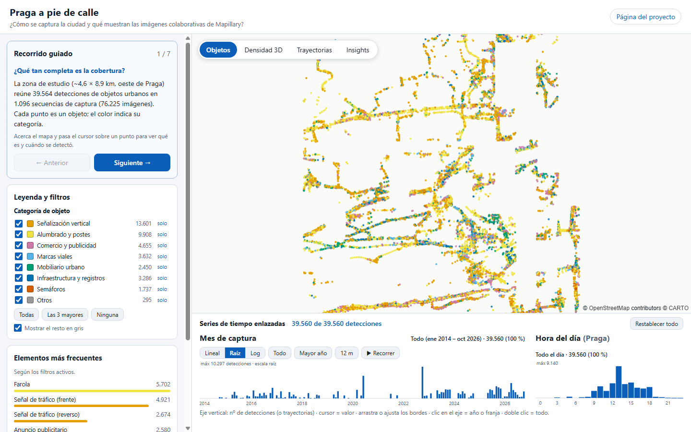

Equipo
| Integrante | Responsabilidades |
|---|---|
| Jeffry Arturo Hilario Quintana | Extracción y limpieza de datos, reconstrucción de trayectorias, diseño y desarrollo de la visualización, informes, paper, póster, presentaciones y videos. |
Resumen

Mapillary reúne fotografías de calle aportadas por voluntarios y detecta en ellas objetos urbanos. Cada dato existe porque alguien pasó por allí con una cámara, así que estos datos suelen describir mejor a quien captura que a la ciudad capturada. Este proyecto hace visible ese sesgo en el oeste de Praga (~4,6 × 8,9 km) con cuatro vistas —objetos, densidad de recorrido en 3D, trayectorias con reloj de 24 h y mapas de tráfico por franja horaria (tres franjas o un mini mapa cada 2 horas)—, series de tiempo enlazadas, una leyenda que filtra y un recorrido guiado de diez pasos que sigue el video de presentación.
Videos
Datos y metodología
- La aplicación incluye una segunda pestaña, Miraflores (Lima), con el mismo diseño y filtros (selector junto a «Página del proyecto»). El paper, el póster y los videos se centran en Praga.
- Mapillary API v4 (
map_featureseimages), datos colaborativos bajo CC BY-SA. Se descargó el oeste de Praga (lon 14,350–14,415; lat 50,050–50,130); detecciones e imágenes cubren la misma zona. Cada celda se pide con páginas grandes y, si la API falla, se subdivide, porque con páginas pequeñas la API recorta los resultados en silencio. - Las trayectorias se reconstruyen con las marcas de tiempo de las detecciones y se ajustan a la red vial con OSRM. El modo de desplazamiento se infiere solo por la velocidad media y es poco fiable.
- Pipeline, datos procesados y diccionario de datos en el repositorio.
Agradecimientos y reconocimientos
- Datos © contribuyentes de Mapillary (CC BY-SA). Mapa base © CARTO, © OpenStreetMap contributors.
- Ajuste de trayectorias a la red vial: OSRM sobre datos de © OpenStreetMap contributors.
- Bibliotecas: deck.gl 8.9 y MapLibre GL 3.6.
- Paleta categórica de Okabe & Ito (segura para daltonismo).
- Inspiración: la exploración de viajes de taxi de Ferreira et al. (IEEE TVCG, 2013) y el ejemplo de flujo de trayectorias de deck.gl (
TripsLayer). - Código desarrollado con asistencia de herramientas de IA, revisado y comprendido por el autor.
- Retroalimentación del profesor sobre el prototipo, documentada en
deliveries/week12/PeerCritiqueResponse.pdf.
Ejecutar el software
git clone https://github.com/jeffHQ/NewMapillaryVisualization.git cd NewMapillaryVisualization/deliveries/week15/app python -m http.server 8000 # abrir http://localhost:8000
Hace falta conexión a internet (bibliotecas y mapa base por CDN). Los datos procesados ya están en app/data/. Para regenerarlos desde la API de Mapillary, ver el README del repositorio.